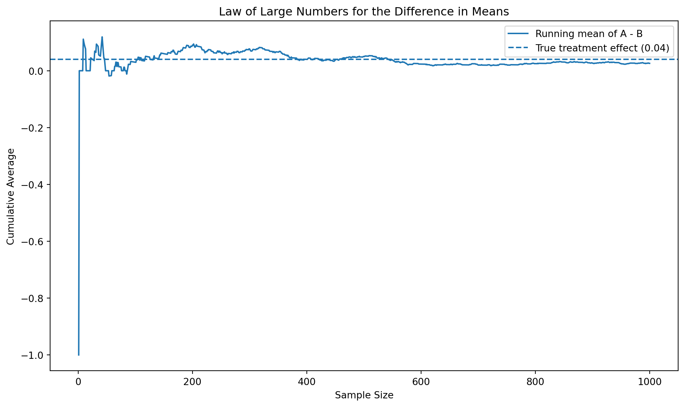
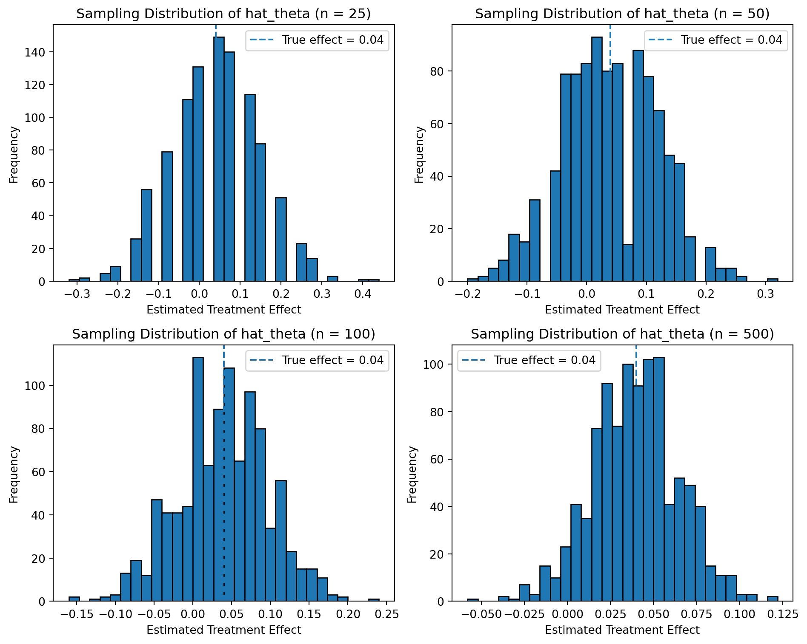

Simulating Key Ideas from Classical Frequentist Statistics
Author
Yi Zhao
Published
April 15, 2026
Introduction
hi
In this post, I study an A/B test for a website call to action (CTA). The business goal is to determine which wording leads to a higher newsletter sign-up rate. Although this is a practical marketing problem, it is also a useful setting for learning key ideas from classical frequentist statistics.
The basic idea of the experiment is simple. Website visitors are randomly assigned to one of two CTA versions, A or B, and we observe whether each visitor signs up for the newsletter. By comparing the observed sign-up rates across the two groups, we can estimate the effect of CTA wording on conversion.
This example also connects directly to the frequentist view of probability from class. In that framework, probability is understood as a long-run relative frequency over repeated trials. Here, the sign-up rate for each CTA can be interpreted as the long-run proportion of visitors who would sign up if we repeatedly showed that version to many similar users.
The A/B Test as a Statistical Problem
Each visitor produces a binary outcome: either they sign up for the newsletter or they do not. Because of this, each observation can be modeled as a Bernoulli random variable that takes value 1 for a sign-up and 0 otherwise.
Let \(\pi_A\) denote the true probability that a visitor signs up after seeing version A, and let \(\pi_B\) denote the corresponding probability under version B. The main quantity of interest is the treatment effect:
\[
\theta = \pi_A - \pi_B
\]
This parameter measures the true difference in sign-up rates between the two CTA versions. If \(\theta > 0\), then version A performs better on average. If \(\theta < 0\), then version B performs better.
A natural estimator for this parameter is the difference in sample means:
\[
\hat{\theta} = \bar{X}_A - \bar{X}_B
\]
Since the outcome is coded as 1 for sign-up and 0 for no sign-up, the sample mean in each group is simply the sample sign-up rate. Therefore, the difference in sample means is the same as the difference in observed conversion rates.
Simulating Data
To make the statistical ideas concrete, I simulate data under a known data-generating process. I assume that the true sign-up probability is 0.22 for CTA version A and 0.18 for CTA version B. Therefore, the true treatment effect is:
\[
\theta = 0.22 - 0.18 = 0.04
\]
This means that version A is assumed to outperform version B by 4 percentage points in the population. I then simulate 1000 visitors in each group, where each visitor either signs up or does not sign up.
This setup is useful because in real applications the true parameter is unknown, but in a simulation we know the truth in advance. That allows us to study how well estimators behave, how much they vary from sample to sample, and how ideas such as the law of large numbers, the central limit theorem, and hypothesis testing work in practice.
The simulated sample produces an estimated sign-up rate for each CTA version and an estimated treatment effect \(\hat{\theta}\). Because the data are generated randomly, these sample estimates will not be exactly equal to the true values of 0.22, 0.18, and 0.04 in every run. This sampling variation is fundamental to frequentist inference and motivates the need for ideas such as standard errors, confidence intervals, and hypothesis testing.
The Law of Large Numbers
The Law of Large Numbers (LLN) says that as the sample size grows, the sample mean converges to the population mean. In this A/B testing context, that idea applies directly to the estimator
\[
\hat{\theta} = \bar{X}_A - \bar{X}_B
\]
As the number of observations increases, the difference in sample means should get closer to the true treatment effect \(\theta = \pi_A - \pi_B\). This is what gives us confidence that large samples are informative: although any one sample may be noisy, the estimator becomes more stable as more data accumulate.
import matplotlib.pyplot as pltdiff = A - Brunning_mean = np.cumsum(diff) / np.arange(1, len(diff) +1)plt.figure(figsize=(10, 6))plt.plot(np.arange(1, len(diff) +1), running_mean, label="Running mean of A - B")plt.axhline(y=0.04, linestyle="--", label="True treatment effect (0.04)")plt.xlabel("Sample Size")plt.ylabel("Cumulative Average")plt.title("Law of Large Numbers for the Difference in Means")plt.legend()plt.tight_layout()plt.show()

The figure shows that the cumulative average of the difference vector is quite unstable when the sample size is small, but it becomes more stable as the sample size increases. Over time, the running mean moves toward the true treatment effect of 0.04. This is a visual demonstration of the Law of Large Numbers: although early observations can produce substantial noise, larger samples tend to average that noise out.
Bootstrap Standard Errors
Now that I have a point estimate for the treatment effect, the next natural question is how precise that estimate is. A point estimate alone is not enough, because repeated samples would produce different values of \(\hat{\theta}\). To quantify this uncertainty, I estimate the standard error of \(\hat{\theta}\).
One flexible way to do this is the bootstrap. The bootstrap repeatedly resamples from the observed data, with replacement, and recalculates the estimator each time. The variation across these bootstrap estimates approximates the sampling variation of the original estimator.
Here, I repeatedly resample the A group and the B group separately, compute a bootstrap version of the treatment effect each time, and then use the standard deviation of those bootstrap estimates as the bootstrap standard error.
The bootstrap standard error and the analytical standard error are essentially identical in this simulation, both equal to about 0.0175. This suggests that the bootstrap is capturing the sampling uncertainty of the estimator very well.
Using the bootstrap standard error, I construct a 95% confidence interval for the treatment effect. This interval describes a range of plausible values for the true difference in sign-up rates. If the interval contains 0, then the observed difference may be explained by sampling variation alone. If the interval excludes 0, then the data provide stronger evidence that the two CTA versions perform differently.
The Central Limit Theorem
The Central Limit Theorem (CLT) says that, under regularity conditions, the sampling distribution of a sample mean becomes approximately normal as the sample size grows. In this A/B testing setting, the estimator \(\hat{\theta} = \bar{X}_A - \bar{X}_B\) is based on sample means, so the CLT implies that its sampling distribution should also become increasingly normal as the number of observations increases.
This matters because much of frequentist inference relies on approximate normality. Confidence intervals and hypothesis tests are much easier to construct when the estimator has a sampling distribution that is close to bell-shaped and symmetric.

The histograms show the sampling distribution of \(\hat{\theta}\) for different sample sizes. When the sample size is small, the distribution is noisier and less smooth. As the sample size increases, the distribution becomes more concentrated and more symmetric around the true treatment effect of 0.04.
This is exactly what the Central Limit Theorem predicts. Even though the underlying data are Bernoulli rather than normal, the distribution of the estimator becomes increasingly close to a normal distribution as the sample size grows.
Hypothesis Testing
To formally test whether the two CTA versions differ, I consider the null hypothesis that the true treatment effect is zero:
\[
H_0: \theta = 0
\]
against the two-sided alternative
\[
H_1: \theta \neq 0
\]
Under the null hypothesis, the two versions have the same true sign-up rate, so any observed difference in the sample is due only to random sampling variation. Under the alternative hypothesis, the true sign-up rates differ.
Using the Central Limit Theorem, I can standardize the estimator by subtracting the null value and dividing by its standard error:
\[
z = \frac{\hat{\theta} - 0}{SE(\hat{\theta})}
\]
When the sample size is reasonably large, this standardized statistic is approximately normal. That allows me to compute a p-value and evaluate whether the observed treatment effect is unusually large relative to what would be expected under the null.
z-statistic: 1.4858
p-value: 0.1373
The test statistic is not especially large relative to its standard error, so the corresponding p-value is not small. At the conventional 5% significance level, I would therefore fail to reject the null hypothesis that the two CTA versions have the same true sign-up rate.
This conclusion is consistent with the confidence interval computed earlier. Because the 95% confidence interval includes 0, the sample does not provide strong enough evidence to conclude that the true treatment effect is different from zero.
The T-Test as a Regression
A simple A/B test can also be written as a regression model. To do this, I stack the two groups together into one dataset and define an indicator variable \(D_i\) that equals 1 if a visitor saw version A and 0 if a visitor saw version B. I then estimate the regression
\[
Y_i = \beta_0 + \beta_1 D_i + \varepsilon_i
\]
where \(Y_i\) is the binary sign-up outcome. In this setup, \(\beta_0\) represents the mean outcome for group B, and \(\beta_1\) represents the difference in mean outcomes between group A and group B.
That means the regression coefficient \(\beta_1\) is exactly the treatment effect of interest:
\[
\beta_1 = \pi_A - \pi_B = \theta
\]
and its sample estimate \(\hat{\beta}_1\) is the same as the difference in sample means \(\hat{\theta}\).
OLS Regression Results
==============================================================================
Dep. Variable: Y R-squared: 0.001
Model: OLS Adj. R-squared: 0.001
Method: Least Squares F-statistic: 2.205
Date: Thu, 28 May 2026 Prob (F-statistic): 0.138
Time: 23:46:07 Log-Likelihood: -961.28
No. Observations: 2000 AIC: 1927.
Df Residuals: 1998 BIC: 1938.
Df Model: 1
Covariance Type: nonrobust
==============================================================================
coef std err t P>|t| [0.025 0.975]
------------------------------------------------------------------------------
const 0.1760 0.012 14.217 0.000 0.152 0.200
D 0.0260 0.018 1.485 0.138 -0.008 0.060
==============================================================================
Omnibus: 467.203 Durbin-Watson: 1.979
Prob(Omnibus): 0.000 Jarque-Bera (JB): 861.348
Skew: 1.586 Prob(JB): 9.13e-188
Kurtosis: 3.523 Cond. No. 2.62
==============================================================================
Notes:
[1] Standard Errors assume that the covariance matrix of the errors is correctly specified.
In my results, the regression intercept is 0.176, which matches the sample mean for group B, and the coefficient on the treatment indicator is 0.026, which matches the estimated treatment effect from the earlier A/B comparison. This confirms that the regression approach reproduces the same substantive conclusion.
The Problem with Peeking
A common practical temptation in A/B testing is to “peek” at the data before the experiment is finished. For example, a manager may want to check the results every time another 100 visitors arrive and stop the test as soon as the p-value falls below 0.05.
The problem is that classical hypothesis testing assumes a fixed testing procedure. If I repeatedly test the same experiment while data accumulate and stop whenever I see significance, I create many chances to make a false positive decision. As a result, the actual Type I error rate can become much larger than the nominal 5% level.
Under the null hypothesis, the two CTA versions truly have the same sign-up rate, so any statistically significant result is a false positive. If I were to follow the classical fixed-sample testing framework correctly, the Type I error rate should be around 5%.
However, when I repeatedly peek at the results and stop as soon as significance appears, the false positive rate becomes noticeably larger than 5%. This happens because repeated testing gives randomness more opportunities to generate an apparently significant result.
This simulation shows why peeking is a serious practical problem in experimentation. If analysts or managers monitor p-values continuously without using an appropriate sequential testing correction, they may convince themselves that a nonexistent treatment effect is real.
Conclusion
This A/B testing example illustrates several central ideas in classical frequentist statistics. First, the Law of Large Numbers shows why estimators become more stable as the sample size increases. Second, the bootstrap and analytical standard errors quantify the uncertainty around the estimated treatment effect. Third, the Central Limit Theorem explains why approximate normal inference becomes reasonable in larger samples.
In this simulated dataset, version A produced a higher estimated sign-up rate than version B, but the confidence interval included 0 and the p-value was greater than 0.05. Therefore, I do not have strong enough evidence to conclude that the two CTA versions differ in the population. Finally, the peeking simulation shows that repeatedly checking results can substantially inflate the false positive rate, which is an important practical warning for real-world experimentation.